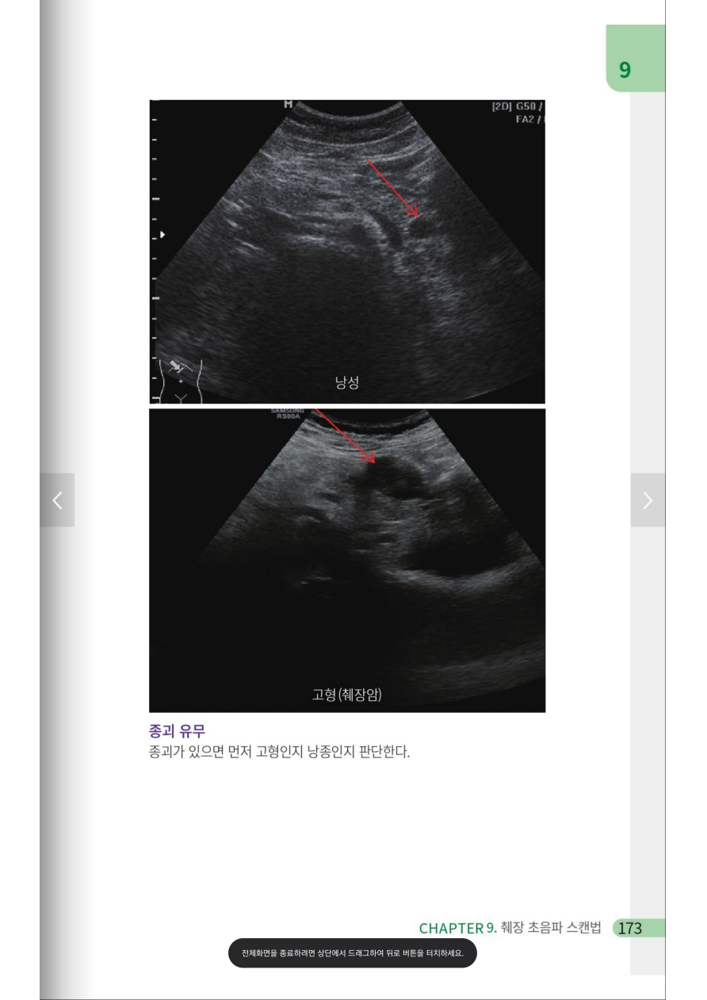

복부 · 술기
복부 초음파 술기 — 간담췌·신장·비장 스캔 프로토콜
간담췌·신장·비장 복부 초음파의 probe 위치와 표준 view 스캔 프로토콜 정리
01 — 스캔 기본 원칙스캔 기본 원칙
- 기본 전제: 장기가 view에서 보이기 시작할 때부터 안 보일 때까지 sliding, tilting하며 훑는다.
- Probe marker는 환자의 오른쪽, 검사자 쪽으로 향하게 잡는다.
- Intercostal view에서는 intercostal space에 맞게 probe를 align한다.
- fatty abdominal wall이면 penetration이 안 되므로 주파수(f)를 낮춰 penetration을 올린다.
- intercostal view에서는 한 space씩 위아래로 이동하며 안 보일 때까지 꼼꼼히 본다.
- 초음파든 아니든, 검사 전에 반드시 이전 CT 검사 결과를 보고 들어간다.
- CT상 right lobe의 anterior 쪽에 bowel이 있는 경우 잘 안 보이므로 환자를 눕혀서 본다.
- 사람마다 췌장의 밝기가 다르므로 P-duct와 splenic vein을 landmark로 삼아 찾아서 본다.

간 스캔
좌엽(Lt Liver)
- Lt Liver Vertical
- Lt Liver Longi
우엽(Rt Liver) — subcostal 접근
| View | 접근 | 관찰 대상 |
|---|---|---|
| Portal confluence | subcostal | RPV/LPV 분기지점(confluence) |
| 삼지창 뷰 | subcostal | HV |
| RPV 분지 | subcostal | RPV anterior branch, posterior branch |
| Dome | subcostal | dome 관찰, 이때 CBD를 같이 보기도 함 |
Rt liver에서 HV는 삼지창 view로, PV는 두 번에 나눠서 portal confluence 및 RPV anterior/posterior가 나뉘는 지점을 subcostal로 2회에 걸쳐 본다.
P-duct
- Chest CT — Aorta, ligamentum venosum
- (Rotated H shape PV) LPV umbilical portion, S1, 2, 3
- GB longi로 찾고 11시~2시 방향으로 rotation해가면서 hepatic artery, CBD, PV를 찾는다. Normal range는 6 mm 이하, 11 mm 이상이면 work-up.
- S4, GB
- S2, 4, 8, 7 — epigastric part에서 살짝 right로 트는 정도
- S 5, 6, 7
- Rt kidney short axis plane에서 dome을 한 번 더 관찰
- RPV, S5·8 (고래꼬리, anterior portion) / RHV, S5·8·7·6 (posterior portion of Rt liver) / GB recheck
담낭 및 담도
- GB and CBD, Longi
- cholecystitis: GB 끝이 머슬을 누르는가, sono Murphy sign, 주변의 fat infiltration이 있는지 확인한다.
- chronic cholecystitis: diffuse wall thickening
- CBD cutoff는 age에 따라 다르지만 기본적으로 8 mm 미만.
- Post ERCP: portal vein wall, GB wall을 따라 pneumobilia가 보이면 ERCP가 성공적이고 decompression된 것(lumen과 공기가 통하는 상태).
- Study material: cholecystosis, cholecystorolosis, GB adenomyomatosis
췌장
- Pancreas routine view는 거의 body만 보이므로, duodenal portion까지 충분히 내려서 head와 uncinate를 보려고 노력하고, trans-splenic view로 tail의 끝부분을 본다.
- T colon 아래에서 pancreas body를 향해 아래에서 위로 올라가는 view도 추가한다.
- P-duct가 4 mm 이상이거나 uneven하게 울퉁불퉁하면 긴장하고 APCT/Pancreas CT를 고려한다.
신장 및 비장
Rt Kidney and Liver
- Rt intercostal 접근으로 본다.
- Rt kidney short axis plane에서 dome을 한 번 더 관찰한다.
Lt Kidney and Spleen
- Probe 위치는 xiphoid process level.
신장 초음파 시 추가 확인
- Kidney sono: RI(Renal index), Renal artery doppler waveform을 보며 신장 혈류를 정량적으로 측정하고, PSV로 올라가는 slope가 stiff해야 한다.
- Hydronephrosis는 paravalvic cyst와 매우 비슷하므로 calyx가 같이 부어 있는지 봐야 한다.
- Ureter를 track해서 같이 부어 있는지 vs 눌려 있는 것인지 확인한다.
- Sono로 APN detection은 사실상 불가능하다.
- 소아 UTI는 sono로 보지 않으며, very severe stage가 아닌 것을 확인하는 용도로 쓴다.
병변 평가
- Cancer mass effect는 vessel을 누르는 것이며, 나쁜 mass는 focal fat sparing을 제외하고 대부분 hypoechoic하다.
- Nodular lesion은 타입별 호발위치를 공부해 둔다.
- Vessel을 따라 혹은 capsule 바로 밑에 hypoechoic한 경우: focal fat sparing.
- LN이 동그랄 때 high risk이므로 necrotic lesion을 확인한다.
- Fatty liver는 CT보다 sono가 더 믿을만하다.
- Nodular hepatic lesion 감별질환 프로토콜(perplexity)을 참고한다.
- Jejunum은 너무 길어서 잘 보지 못한다.
기타 부위
탈장(Hernia)
- Inguinal hernia: 일어서서 먼저 검사한다(누우면 reduc되어 안 보임).
갑상선(Thyroid)
- Parenchyma가 얼룩덜룩한 것과 hypoechoic한 것의 구분: margin을 본다. ill defined이면 parenchymal heterogeneity.
- Thin septa가 있으면 뒤로 빔이 들어가지 않아 hypo하게 보인다.
- Anechoic cyst vs hypoechoic lesion: 물혹은 wall의 hyperechogenicity, 뒤에 hyperecho artifact를 보인다. 항상 어려운 게 맞고, 너무 작으면 hard to characterize로 하고 넘긴다.
- Hypoechoic해도 partially cystic하면 TIRADS C3.
복부 CT·MR 판독 참관
- 같이 찍을 때 팔 포지션 때문에 둘 중 하나는 안 보인다.
- CT 판독 시에는 쪼개서 본다: Lt liver, Rt anterior liver, Rt posterior liver, pancreas 등.
- Diaphragm, descending aorta contour를 확인한다.